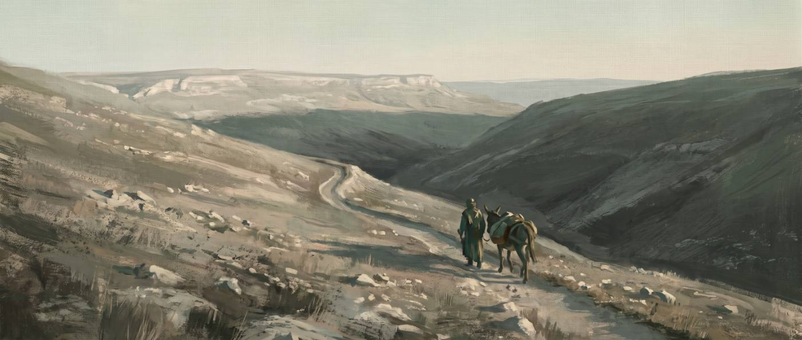
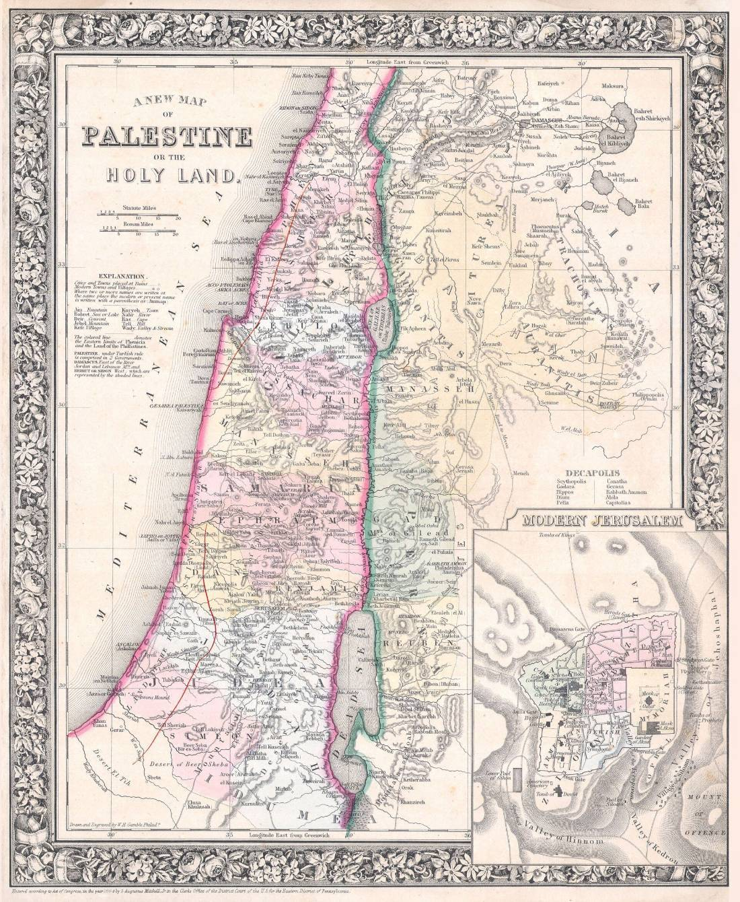

나사렛에서 베들레헴까지, 며칠 길이었나
호적하러 가는 길은 얼마나 멀었을까요? 그리고 해산이 임박한 마리아는 걸었을까요, 나귀를 탔을까요? 길을 실제로 재 보고, 두 견해를 문헌으로 나눠 각각 며칠이 걸렸을지 계산했어요.
성경은 이 길을 어떻게 적었을까요?
요셉도 다윗의 집 족속이므로 갈릴리 나사렛 동네에서 유대를 향하여 베들레헴이라 하는 다윗의 동네로 그 약혼한 마리아와 함께 호적하러 올라가니 마리아가 이미 잉태하였더라
누가복음 2:4-5 · 개역개정
“올라가니”로 옮긴 그리스어는 ἀνέβη(아네베)예요. 나사렛이 해발 350 m, 베들레헴이 775 m니까 실제로 올라가는 길이 맞아요. 다만 이 낱말은 예루살렘으로 가는 순례를 가리킬 때 관용적으로도 쓰여요.
그런데 본문에는 무엇을 타고 갔는지가 한 글자도 없어요. 나귀도, 수레도, 같이 간 사람도 나오지 않아요. 누가는 그저 “함께”라고만 적었어요.
“거기 있을 그 때에 해산할 날이 차서”라고 되어 있어요. 여기 그리스어는 ‘그들이 거기 있는 동안에’라는 뜻이에요. 도착한 그날 밤 바로 낳았다고는 말하지 않아요. 베들레헴에 얼마간 머무른 뒤에 해산했다고 읽는 편이 본문에 더 가까워요. 성탄 연극에 나오는 ‘문을 두드리며 급하게’ 하는 장면은 성경에 없는 거예요.

어느 길로 갈 수 있었을까요?
갈릴리에서 예루살렘으로 가는 길은 크게 셋이었는데, 그중 둘이 현실적인 선택이었어요. 바닷가 길은 너무 크게 돌아가서 뺐어요.
| 경로 | 지나는 곳 | 거리 | 누적 오르막 | 문제 |
|---|---|---|---|---|
| 중앙 산지길 | 이스르엘 평야, 기나이, 도단, 세겜, 실로, 벧엘 | 143 km가장 짧음 | 820 m | 사마리아를 지나가야 해요요세푸스는 이 길에서 갈릴리 순례자가 살해된 일을 적어 놨어요(『유대 전쟁사』 2.232). |
| 요단 계곡길 | 벧산, 요단 계곡, 아담 나루, 여리고 | 164 km21 km 더 멂 | 1,105 m | 마지막 26 km에서 1,018 m를 올라야 해요여리고(해발 −258 m)에서 예루살렘(760 m)까지요. 누가복음 10:30이 “내려가다가”라고 한 바로 그 길이에요. |
두 경로의 고도 단면
가로축은 걸어온 거리(km), 세로축은 해발 높이(m)예요. 점에 손을 올리면 어디인지 보여요.
경유지 수치를 표로 보고 싶으면 눌러 주세요
| 중앙 산지길 | 누적 km | 해발 m | 요단 계곡길 | 누적 km | 해발 m |
|---|---|---|---|---|---|
| 나사렛 | 0 | 350 | 나사렛 | 0 | 350 |
| 이스르엘 평야 | 19.9 | 75 | 다볼 남쪽 | 17.9 | 120 |
| 기나이(제닌) | 33.6 | 150 | 벧산 | 35.7 | −120 |
| 도단 골짜기 | 44.1 | 300 | 요단 계곡 중부 | 63.6 | −250 |
| 세겜 | 71.6 | 550 | 아담 나루 | 89.9 | −290 |
| 실로 | 92.9 | 720 | 요단 계곡 남부 | 111.7 | −330 |
| 벧엘 | 111.7 | 880 | 여리고 | 127.1 | −258 |
| 예루살렘 | 132.4 | 760 | 예루살렘 | 153.4 | 760 |
| 베들레헴 | 143.0 | 775 | 베들레헴 | 164.0 | 775 |
그 나귀는 어디서 왔을까요?
성탄 그림마다 빠지지 않는 나귀가 복음서에는 없어요. 출처를 따라가면 한 곳에 닿아요.
가장 이른 기록은 2세기 중엽에 쓰인 『원시 야고보복음』 17장이에요. 성경에 들어가지 못한 책이라 외경(外經)이라고 불러요.
“아우구스투스 황제로부터 유대 베들레헴의 모든 사람이 호적하라는 명령이 내렸다. 요셉이 말하였다. ‘내 아들들은 내가 호적하겠다. 그런데 이 처녀는 어찌할까?’ … 그리고 그는 나귀에 안장을 지우고 그 여자를 그 위에 앉혔다. 그의 아들이 나귀를 끌었고, 요셉이 뒤를 따랐다.”
원시 야고보복음 17장 (2세기 외경)
여기서 두 가지가 같이 나와요. 나귀, 그리고 우리가 잊고 있던 같이 간 사람이에요. 이 책에서 요셉은 혼자가 아니라 아들을 데리고 가요. 나귀를 끄는 사람이 따로 있는 그림이죠.
『원시 야고보복음』은 2세기 외경이라, 역사 기록이 아니라 믿음의 상상이 섞인 이야기예요. 여기서 나온 여러 장면(요셉의 전처 아들들, 동굴에서의 출산, 산파 살로메)이 나중에 성탄 그림의 원형이 됐어요. 그러니까 “나귀를 탔다”는 건 성경이 한 말이 아니라 2세기 이후의 전승이에요. 그렇다고 “사실이 아니다”라는 뜻은 아니에요. 어느 문헌에서 온 말인지 무게를 정확히 매겨 두자는 거예요.
그런데 나귀 자체는 성경에서 전혀 낯선 게 아니에요. 오히려 여자와 아이, 몸이 약한 사람을 태우는 탈것으로 여러 번 나와요.
וַיִּקַּח מֹשֶׁה אֶת־אִשְׁתּוֹ וְאֶת־בָּנָיו וַיַּרְכִּבֵם עַל־הַחֲמֹר
출애굽기 4:20 · 개역개정
“모세가 그의 아내와 아들들을 데리고 나귀에 태우고 애굽으로 돌아가는데”
이 구절은 특히 눈여겨볼 만해요. 아내와 아이들을 나귀에 태우고 애굽으로 가는 장면이거든요. 마태복음 2장의 애굽 피난과 모양이 같죠.
וַתַּחֲבֹשׁ הָאָתוֹן וַתֹּאמֶר אֶל־נַעֲרָהּ נְהַג וָלֵךְ
열왕기하 4:24-25 · 개역개정
“이에 나귀에 안장을 지우고 자기 사환에게 이르되 몰고 가라 … 하고 가서 갈멜 산으로 가서 하나님의 사람에게로 나아가니라”
수넴 여인은 나귀를 타고, 사환이 나귀를 몰았어요. 『원시 야고보복음』이 그린 장면과 구조가 똑같죠. 아비가일도 나귀를 타고 다윗에게 갔고(사무엘상 25:20, 42), 사사기는 “흰 나귀를 탄 자들”을 노래해요(사사기 5:10).
걸었을까요, 나귀를 탔을까요?
본문이 말을 하지 않으니 어느 쪽도 증명할 수 없어요. 그래서 양쪽 근거를 나란히 놓아 봤어요.
걸어서 갔다
- 본문에 나귀가 없어요. 누가는 “함께”라고만 써요. 나귀는 2세기 외경에서 처음 나와요.
- 나귀는 재산이에요. 목수 집안이 반드시 나귀를 가졌다고 볼 근거는 없어요.
- 안장도 없이 나귀를 타고 돌길과 비탈을 며칠 가는 건, 해산이 임박한 몸에 오히려 더 힘들 수 있어요.
- 그 시대 여인들은 해산 직전까지 물을 긷고 밭일을 했어요. 걷는 것 자체가 특별한 일은 아니었어요.
나귀를 이용했다
- 나귀는 여자와 아이, 약한 사람의 탈것으로 성경에 거듭 나와요(출애굽기 4:20, 열왕기하 4:24, 사무엘상 25:20).
- 140 km가 넘는 길에는 며칠치 먹을 것과 물, 담요, 해산 준비물이 필요해요. 사람 등에만 지고 가기는 어려워요.
- 그러니 짐 나르는 짐승은 거의 있어야 했고, 짐승이 있었다면 마리아가 힘들 때 탔다고 보는 게 자연스러워요.
- 2세기에 이미 이 그림이 자리 잡았다는 건, 그때 사람들에게 그게 가장 그럴듯한 여행 방식이었다는 뜻이에요.
아니에요. 짐을 실은 나귀의 걸음은 사람 걸음과 거의 같아요(시속 4~5 km). 나귀의 이점은 속도가 아니라 체력이에요. 타고 가면 덜 지치니까 하루에 더 오래 움직일 수 있고, 그래서 날수가 줄어드는 거예요. 두 견해의 차이는 ‘얼마나 빨리 가느냐’가 아니라 ‘하루에 몇 시간을 버티느냐’에서 생겨요.
그래서 며칠 걸렸을까요?
어림잡기 전에 근거부터 밝힐게요. 계산에 쓴 값과 그 출처예요.
| 항목 | 값 | 근거 |
|---|---|---|
| 평지 보행 속도 | 4~5 km/h | 건강한 어른의 보통 걸음이에요 |
| 오르막 보정 | 600 m당 +1시간 | 네이스미스 규칙 |
| 하루 이동 가능 시간 | 6~8시간 | 해 뜰 때부터 질 때까지에서, 한낮 쉬는 시간과 밥 먹는 시간을 뺐어요 |
| 로마 군인 행군 | 29.6 km / 5시간 | 베게티우스 『군사학 논고』 1.9. 여름 다섯 시간에 20 로마마일을 갔고, 빠른 행군은 24마일이었어요 |
| 갈릴리→예루살렘 최단 | 3일 | 요세푸스 『자서전』 269. 건강한 남자가 서둘러 갔을 때예요 |
| 순례 관행 | 중앙길 3일 · 요단길 5~7일 | 예수님 시대 순례길 연구에서 온 값이에요 |
| 경우 | 하루 이동 | 중앙 산지길 143 km | 요단 계곡길 164 km |
|---|---|---|---|
| 기준선 | 40~48 km건강한 남자가 짐을 줄이고 서둘렀을 때예요 | 3~4일 | 4~5일 |
| 견해 A · 걸어서 | 15~20 km해산이 임박한 마리아와 함께 · 하루 5~6시간 | 8~10일 | 9~11일 |
| 견해 B · 나귀 이용 | 22~28 km마리아가 나귀를 타고 · 하루 7~8시간 | 5~7일 | 6~8일 |
어느 쪽으로 계산해도 적어도 닷새, 넉넉히 잡으면 열흘이 넘는 길이에요. 안식일에 하루를 쉬었다면 하루가 더 붙고요. 두 사람은 길 위에서 최소 네다섯 밤을 자야 했어요. 그때 마리아는 해산이 임박한 몸이었고요.
아직 모르는 것들
- 요셉과 마리아는 어느 길로 갔을까요? 본문은 말하지 않아요. 사마리아의 위험을 생각하면 요단 계곡길이 낫고, 마리아의 몸을 생각하면 짧은 중앙 산지길이 나아요. 미결이에요.
- 둘만 갔을까요? 그 시대 여행은 강도 때문에 무리 지어 다니는 게 보통이었어요. 누가복음 2:44도 순례가 ‘동행하는 무리’ 단위였다는 걸 보여 주고요. 호적하러 가는 다윗 집안 사람들이 함께 움직였을 가능성이 커요.
- 언제 도착했을까요? 누가복음 2:6이 “거기 있을 그 때에”라고 하니, 해산하기 며칠 전이나 몇 주 전에 도착했을 수도 있어요. 그렇다면 ‘길 위의 급박함’은 우리가 나중에 덧붙인 셈이에요.
근거 자료
거리는 경유지의 위경도로 대권거리를 구한 뒤, 옛길의 굴곡을 반영해 1.22를 곱한 값입니다. 고대의 실제 노선이 아니라 합리적 추정치이며, 경유지 선택에 따라 ±10 km 정도 달라질 수 있습니다. 표고는 각 지점의 대표값입니다.
- 『원시 야고보복음』 17장. 나귀 전승의 최초 문헌 (2세기 외경)
- 베게티우스, 『군사학 논고』 1.9. 로마 군대의 행군 규정
- 요세푸스, 『자서전』 269. 갈릴리에서 예루살렘까지 3일
- 요세푸스, 『유대 고대사』 20.118 및 『유대 전쟁사』 2.232. 갈릴리 사람들의 사마리아 통과 관습과 그 위험
- 출애굽기 4:20, 열왕기하 4:22-25, 사무엘상 25:20과 42, 사사기 5:10. 나귀를 타는 사람들 (히브리어 원문 대조)
- 누가복음 2:4-7. 헬라어 본문 (NA28)